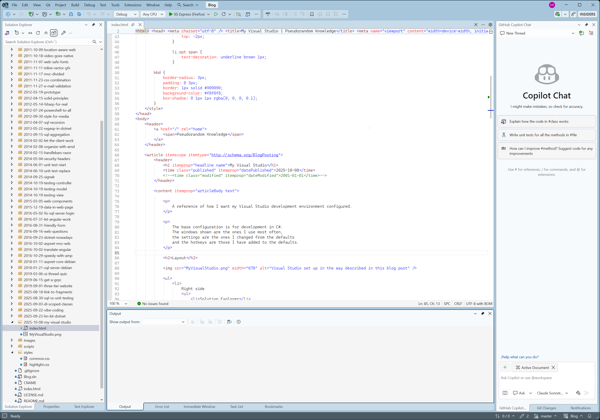

My Visual Studio
A reference of how I want my Visual Studio development environment configured.
The base configuration is for development in C#. The windows shown are the ones I use most often, the settings are the ones I changed from the defaults and the hotkeys are those I have added to the defaults.
The usage of Copilot is experimentary, I may scale it back in the future.
Layout
-
Right side
- Solution Explorer
- Properties
- Toolbox (when relevant)
- Test Explorer
-
Center
- Code editor
-
Bottom
- Find Results (when relevant)
- Output
- Error List
- Immediate Window
- Task List
- Bookmarks
- Autos (during debugging)
- Watch 1 (during debugging)
- Call Stack (during debugging)
-
Left side
- Diagnostic Tools (during debugging)
- GitHub Copilot Chat
- Git Changes
- Notifications
Settings
-
Environment > Visual Experience
- Color theme: Cool Breeze
-
Environment > Search
- Automatically limit search to selection
-
Environment > Tabs > Document Tabs
- Show tabs in multiple rows
- Show pinned tabs in a separate row
- Show Close button in the document well
- Dirty indicator: Dot
- Tab colorization method: Project
-
Environment > Tabs > Preview Tab
- Allow new files to be opened in the preview tab
-
Projects and Solutions > General
- Show Output window when build starts
-
Projects and Solutions > Build and Run
- On Run, when build or deployment errors occur: Do not launch
-
Text Editor > General > Display
- Show selection margin
- Enable brace pair colorization
- Automatically surround selections when typing quotes or brackets
-
Text Editor > Advanced
- Difference display mode: Mixed outline
- Difference overview margin
- Default IntelliSence completion mode: Tab-only
-
Text Editor > Code Completions > General
- Code Completion Invocation: Manual
- Copilot Next Edit Suggestions
-
Languages > Defaults > General
- Automatic brace completion
-
Debugging > General
- Automatically close the console when debugging stops
- Keep expanded data tips open until clicked away
-
GitHub > Copilot > Source Control Integration
- Commit message custome instructions: Summarize changes in one sentence only.
-
IntelliCode > General
- C# Suggestions
-
Windows Forms Designer > General > Refactoring
- Enable refactoring on rename
Hotkeys
- Ctrl + O: Ask.Copilot (Text Editor)
- Ctrl + N: Edit.NextSuggestion (Text Editor)